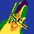

Welcome to the UAT Space Program!
Exploring the Upper Limits of Technology and Space.
 The UAT Space Program Homepage
NASA
- Follow NASA for more information abnout Outer Space!
Artemis Program
- Follow the Artemis program on their blog!
UAT
- Take a look at UAT to explore your future with technology!
UAT Space Program
- The goal of the UAT Space Program is to create a reusable spacecraft that can carry payloads for experiments to near outerspace.
It will use a balloon for re-entry and landing and will collect data and pictures during the flight.
It will also emit a signal so that when it lands, it can be recovered.
Please log in to continue to Mission Control: